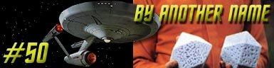
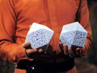
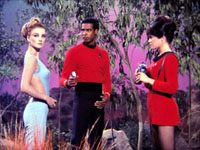
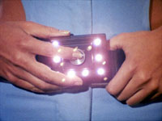
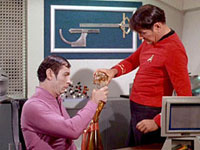
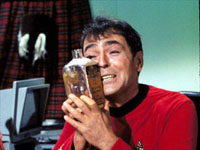
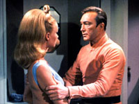
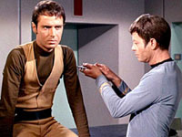
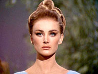
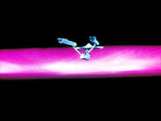

|
Srie
Clssica
Temporada 2

Anlise do episdio por
Carlos
Santos


|
MANCHETE
DO EPISDIO Data Estelar: 4657.5  O capito se recusa e ento a mulher utiliza os controles de espcie de caixa que traz amarrada a cintura para dominar todo o grupo, que imediatamente fica incapaz de se mover. O homem que havia dado o ultimato a Kirk se identifica como Rojan, do Imprio Kelvan, localizado na galxia de Andrmeda. Aps ter suas armas e comunicadores removidos, o grupo liberado da influencia do campo por Rojan. Este informa que faz parte de uma expedio que tem como propsito encontrar um novo lar para o Imprio Kelvan, visto que este est condenado devido a aumento da radiao na galxia de onde vem. Rojan est certo de que nossa Galxia uma boa opo e que ser conquistada facilmente. Ele explica que perderam
sua nave ao atravessar a Grande barreira que cerca a galxia e por isto
pretendem usar a Enterprise para retornar para casa, numa viagem que levar 300
anos. Enquanto Rojan fala, um grupo de trs Kelvans vai a bordo da nave da
Frota Estelar e rapidamente assume o controle, usando dispositivos iguais ao
usado pela mulher Kelvan (Kelinda) para congelar o grupo de desembarque. Rojan ordena que o grupo seja preso em uma cela ainda no planeta. L, Spock tenta usar de telepatia para iludir Kelinda e fazer com que esta abra a cela. Apesar do vulcano ser repelido violentamente durante o contato, o plano funciona e aps remover o cinto com o dispositivo de Kelinda, o grupo deixa a cela, apenas para encontrar Rojan e outro Kelvan, Hanar, esperando por eles.  O grupo de descida
levado de volta a cela, onde Spock analisa a imagem captada da mente de Kelinda
momentos antes de sua separao. Nesta imagem ele pde ver criaturas enormes,
com centenas de tentculos, e acredita ser esta a verdadeira aparncia dos
Kelvans, que aparentemente assumiram a forma humanide apenas para poder usar a
nave, projetada para humanos. Sob ordens de Kirk, Spock entra em um transe profundo, para que os Kelvans pensem que ele est doente e permitam que volte a nave. O plano funciona e Spock e McCoy vo a bordo. Os dois chegam enfermaria acompanhados por um Kelvan (Tomar). L McCoy administra uma medicao no vulcano, e informa a Tomar que Spock em breve estar bem. Este se afasta e deixa os dois na enfermaria. Depois de algum tempo na
superfcie, Kirk tambm levado a bordo junto com o restante do grupo Kelvan,
e aps a Enterprise deixar rbita, ele segue ate a enfermaria para ver Spock e
McCoy, junto com Scott, trabalhando num plano para tentar deter os invasores. A
idia destruir a fonte de energia dos dispositivos Kelvans, que foi trazido
por estes e instalado na engenharia.  Aps atravessar a grande
barreira, os Kelvans usam os dispositivos em seus cintos para reduzir todo o
pessoal considerado por eles no essencial a blocos, conforme j haviam feito
com os dois tripulantes anteriormente, a fim de impedir eventuais tentativas de
retomar a nave, alm de economizar recursos durante a viagem. Rojan tambm
deixa claro que sabia do plano de Scott, e que providncias para impedi-lo j
haviam sido tomadas. Spock informa Kirk que
apenas ele, Spock. McCoy e Scott foram mantidos em sua condio normal.
Aparentemente sem alternativas, os homens da Frota Estelar comeam
perceber que os Kelvans esto tendo dificuldades para lidar com os
corpos humanos, e concluem que podem explorar este fato para tentar enganar o
inimigo. Scott comea introduzindo um dos Kelvans, Tomar, aos prazeres da bebida, McCoy, com a desculpa de curar uma anemia em Hanar, comea a injetar fortes doses de estimulantes no rapaz, e Kirk tenta seduzir Kelinda, e surpreendido por Rojan em uma de suas aproximaes. Aps o incidente Spock questiona Rojan a respeito do ocorrido, durante um jogo de xadrez, tentando provocar um pouco de cimes no lder Kelvan. O estratagema parece dar resultado. Rojan tenta proibir Kelinda de ver Kirk, mas ela se recusa, pelo contrario procura por Kirk novamente, enquanto Hanar tem uma exploso de raiva na ponte e desafia a autoridade de Rojan. Pouco tempo depois, Spock vai at a ponte com a desculpa de executar manuteno de rotina nos sensores da nave, e continua tentando provocar o lder dos Kelvans.  Rojan encontra Kelinda e Kirk e inicia-se uma discusso entre os dois, que logo evolui para uma briga, que passa a ser presenciada por Spock e McCoy que chegam pouco depois sala de recreao. Durante a luta, Kirk faz com que Rojan perceba que o fato de usarem a forma humana os est afetando, tornando-os tambm humanos. Rojan aceita o fato, e a uma oferta de Kirk de levar o fato a Federao, e encontrar de forma pacifica um lugar para os Kelvans dentro galxia. Rojam devolve o controle da nave para a Kirk, e concorda em restaurar a tripulao e levar a nave de volta ao espao da Federao, enquanto uma nave rob ser enviada para Kelvan com a proposta da Federao. Com a situao sob controle, a Enterprise inicia a viajem de volta para casa. Comentrios: Um grupo de viajantes de outra galxia vem at a nossa simptica via Lctea com o propsito de preparar uma invaso. Embora comum na fico cientfica desde tempos remotos, no se pode dizer que este seja um tema que tenha muito a oferecer a Jornada nas Estrelas, mesmo a Serie Clssica., com raras excees.  Primeiro deixemos claro uma questo que para alguns eventualmente escapa(quase escapou ao autor pelo menos). Jornada nas Estrelas uma Srie de TV feita por humanos, para humanos e que fala sobre humanos. Parece obvio, mas nem sempre . Gene Roddenbery desenvolveu um modo de discutir a humanidade aplicando sentimentos ou reaes humanas em supostos aliengenas, e desenvolvendo historias a partir destes contextos. A Historia dos
Kelvans funciona de forma similar, porm desta vez, a idia reforar que
os sentimentos e emoes fazer parte de nossa identidade enquanto seres
humanos. Os Kelvans so apresentados como uma mistura de elementos conhecidos:
Lgica e pragmatismo Vulcano, aliado a cultura expansionista dos Klingons,
sendo a primeira a caracterstica mais importante neste momento. Os Kelvans so,
segundo Spock, uma raa intelectualmente superior e para alcanar esta
superioridade sacrificaram qualquer coisa que pudesse distra-los. Os sentidos
e as emoes. Ao fazer isto,
eles se tornaram seres rgidos demais, incapazes de apreciar as pequenas coisas
da vida que valem a pena, como apreciar o sabor de prato bem preparado, a beleza
de uma flor, ou mesmo a liberdade de um espao aberto. Os Kelvans se sentem
desnorteados pelo simples fato de estarem em um espao que no possam
controlar. Logo precisam estar no comando, exercer o controle, para se sentirem
confortveis e por isto eles precisam conquistar e governar, como disse Rojan a
Kirk. Para eles isto se tornou uma necessidade quase biolgica. Os Kelvans no
vieram de outra galxia para conquistar a nossa apenas por que so aliens
maus, mas por que desaprenderam outro meio de vida, incapazes que se tornaram de
se adaptar ao imprevisvel. Podemos tirar dai
mensagem do segmento. Mais uma vez a Srie Clssica nos alerta para a necessidade de procurar o saber
tecnolgico, sem abandonar, contudo a essncia do que nos faz humanos,
deixando claro quais concesses no podem ser feitas. preciso manter nossa
humanidade, e acima de tudo nossa identidade, mas aprender tambm a conviver
com a diversidade. Um grande desafio enquanto raa, sem duvida.  H um excesso de tecnobabble, sem o qual no seria possvel para os cinco Kelvans dominar os mais de 400 tripulantes a bordo da Enterprise, tripulao esta que mesmo assim, precisou ser estupidificada, uma vez que sempre pareceu que o nico trunfo dos Kelvans era as tais caixas nos cintos, que apesar de ser multi-direcional, precisa pegar a vitima de frente, e neste caso, estar amarrado ao cinto no l muito eficiente. Fora estas armas de eficincia duvidosa, nada de mais. Tanto Kelinda quanto Rojan foram dominados sem dificuldades por Kirk quando o roteiro permitiu, e seus homens j lidaram com inimigos mais capazes com menor dificuldade. A trama tambm ignora algumas questes de comportamento geral dos personagens, o que no ajuda a lhe dar credibilidade. Kirk j colocou a nave em perigo antes, e varias vezes ficou claro que tanto nave quanto tripulao seria dispensveis se a segurana da Federao dependesse disto. Este parece ser caso inequvoco deste tipo de emergncia, logo no parece correto para o capito considerar a hiptese como loucura, ao contrario, deveria ele mesmo ordenar a destruio da Enterprise. Em seguida, vemos justamente McCoy discutindo com Kirk por no ter ordenado a destruio da nave ao passar pela grande barreira. Para o f de Jornada, isto no parece coisa do personagem, que a esta altura j estava desenvolvido o suficiente para que pudssemos esperar do medico certo padro de comportamento.  Depois que a Enterprise parte rumo a Grande Barreira - a mesma de Where No Man Has Gone Before - e a tripulao no essencial reduzida aos tais blocos, (duas formas de economizar algum dinheiro, reaproveitando os efeitos ticos do segmento citado e dispensando um monte de figurantes) com base em que podemos dizer que Kirk, Spock, McCoy e Scott so de alguma forma necessrios aos seqestradores? E mesmo que fossem, estes poderiam rapidamente ser reconstitudos, quando e se necessrio.  Temos ainda algumas outras questes menores que vo aparecendo ao longo do segmento, e que passam a incomodar mais na medida em que o resto da trama vai deixando a desejar, como o fato de Kirk parecer mais da fisiologia vulcana do que McCoy, o dos Kelvans no terem considerado outras raas que poderiam no gostar muito de serem conquistados, como Klingons e Romulanos, por exemplo, ou mesmo o simples fato de parecer certo exagero procurar um novo lar em outra galxia ? No haveria locais mais prximos para os Kelvans se mudarem? As mudanas promovidas a bordo da Enterprise foram aproveitadas pela Frota Estelar ? Por que no deveriam, se a Federao estaria convidando os Kelvans para fazer parte dela agora ? O que levanta outra questo, pois parece que tanto Rojan quanto Kirk excederam suas autoridades, um ao propor e o outro ao aceitar tal acordo, embora tal questo possa ser de certa forma relevada, se nos quisermos imaginar que Kirk ainda levaria esta proposta ao conselho da Federao, conforme ele mesmo props, no inicio do segmento, (antes claro, que Rojan tivesse assassinado uma tripulante a sangue frio, e raptado uma nave estelar).

Rojan:
"We do not colonize. We conquer. We rule. There is no other way for us. Kirk: "A
rose by any other name." Spock: "Humans
are very peculiar. I often find them unfathomable, but an interesting
psychological study." Tomar: "What
is it?"
'Tis but thy name that is my enemy; Romeo and Juliet (II, ii, 1-2)
Escrito por Jerome
Bixby e Dorothy Catherine Fontana Elenco: Warren Stevens como Rojan
|